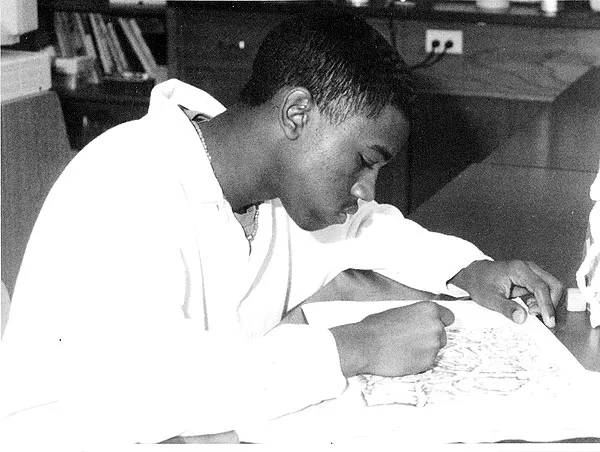
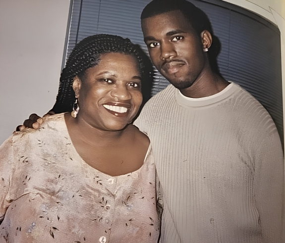
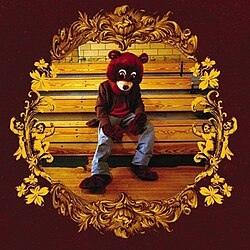
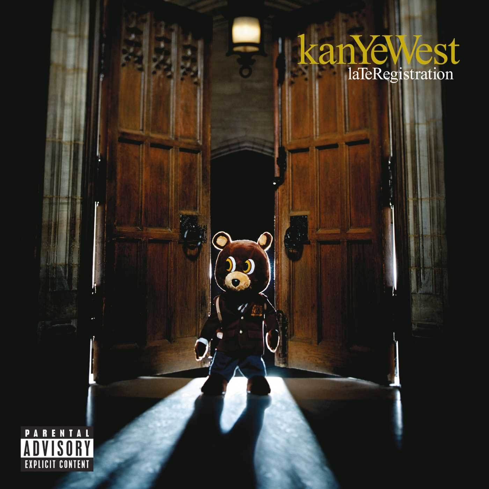
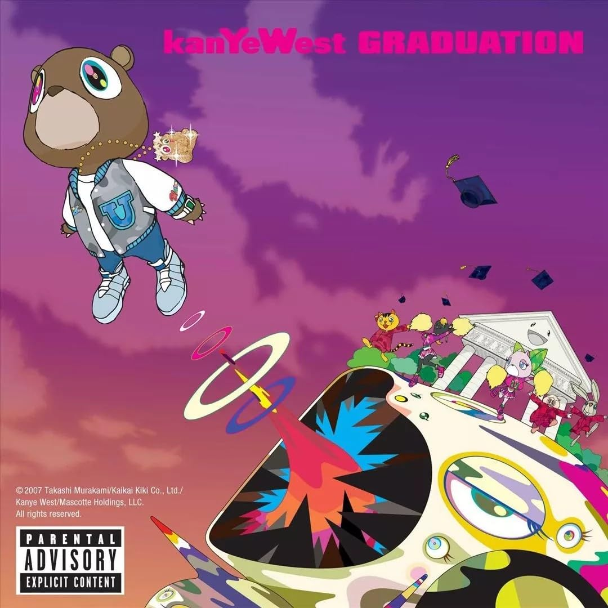

ANTES DA MÚSICA & FACULDADES
Antes de se tornar um ícone global, Kanye Omari West era um garoto apaixonado por arte e tecnologia em Chicago. Ele ingressou na American Academy of Art e depois na Chicago State University para estudar Letras, mas a paixão obsessiva pela música falou mais alto.
Aos 20 anos, ele tomou a decisão arriscada de largar a faculdade para focar totalmente na produção musical — um momento histórico que mais tarde inspiraria seu álbum de estreia revolucionário.

DONDA WEST: A MUSA E PILAR
A relação de Kanye com sua mãe, Dra. Donda West, foi a força motriz de sua vida e arte. Professora universitária e sua maior incentivadora, Donda apoiou Kanye incondicionalmente em todas as suas escolhas arriscadas.
A presença e os ensinamentos de Donda moldaram a autoconfiança inabalável de Kanye. Sua perda prematura em 2007 marcou profundamente sua obra, servindo de inspiração direta para álbuns emotivos como 808s & Heartbreak e o álbum nomeado em sua homenagem, Donda.
A Ascensão ao Estrelato
De produtor nos bastidores da Roc-A-Fella ao topo do mundo.

The College Dropout (2004)
Provoque a indústria. Kanye provou que um produtor podia ser um rapper de topo com lírica profunda, soul samples e crítica social.
Ver detalhes
Late Registration (2005)
A expansão orquestral. Incorporando arranjos de cordas sofisticados e arranjos barrocos ao Hip-Hop.
Ver detalhes
Graduation (2007)
A era dos estádios. Com influências de sintetizadores e synth-pop, Kanye redefiniu o formato dos shows ao vivo.
Ver detalhes